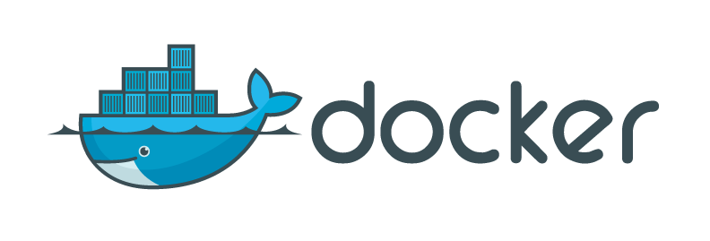
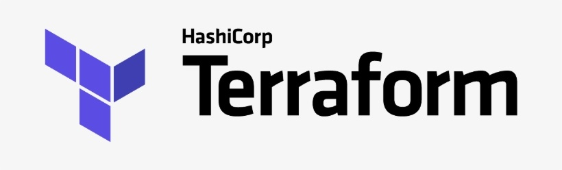
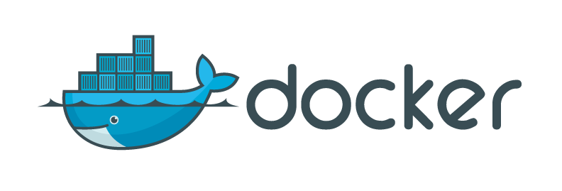
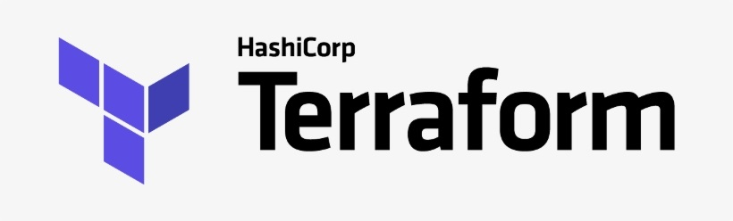

Case Studies
Selected tasks I have worked on during my career
Setting up Google Analytics + Raspberry Pi Dashboard
System Administrator (Working Student) at HomeToGo in 2016
At my first ever job, I helped the marketing department of HomeToGo set up a custom dashboard which accessed
Google Analytics data via a bash script on a Raspberry Pi. This was then connected to a large monitor in the
marketing department's area.
SAP Leonardo ML - Google Cloud Platform integrations
Software Engineer (Working Student) at SAP Innovation Centre in 2017
My first professional software engineering task was working on a backend proxy service which would expose
functionality from Google's cloud speech processiong APIs within SAP's Leonardo Machine Learning platform.
I wrote the service in Python 3 using the Flask framework. This was deployed to an internal Cloud Foundry
instance. The Flask application served a simple page which allowed the user to record their voice and have
it be transcribed for them.
This project was used by team management as part of the evaluation phase of a Google - SAP partnership, as
described here.
I8n and UX improvement of CLI tool
Knowledge Manager (Working Student) at SAP Innovation Centre in 2018
Worked with UX specialist colleague to refactor SAP Leonardo ML CLI tool's build process to pull text sources
(for labels and descriptions) from a single source. We did this by writing a python script to generate
Golang CLI definitions (replacing static definitions) based on a JSON structure containing the text
snippets.
This improved the workflow for Knowledge Management staff responsible for in-application documentation and
internationalisation by centralising the texts in one place and separating the concerns from the actual
code.
Development of NRC Core Web Application
Software Engineer at Norwegian Refugee Council from
2019 to 2021
Beneficiary identity, case and service management tool designed to make data collection easier and safer for
the Norwegian Refugee Councils operations around the world.
Involved in discovery phase, creating proof of concept applications on Salesforce, Anvil and Directus
Full-stack Golang and JavaScript development on final open source implementation
More information about this project can be found here
Web Scraping & Visualisation Project
Data Engineer at Deutsches Institut für Menschenrechte in 2020
Set up a data project end to end, including writing web scrapers (for bespoke websites and social media),
performing NLP tasks (lemmatization, tokenization) and using an open source data visualisation tool to
create dashboards (Metabase).
Installed the PG_TRIGRAM PostgresSQL addon to be able to index text columns more efficiently thus speeding up
the search functionalities on researcher's dashboard tools.
The project was hosted on Digital Ocean's Kubernetes service.
Writing Data Ingestion Pipelines for Private Donation Data Warehouse
Backend/Data Engineer at Norwegian Refugee Council during
2021
Implemented a series of proof of concept data pipelines to retrieve data from a variety of sources including: Google Analytics, Facebook ads, Typeform, Stripe and others.
The proof of concept pipelines were developed as Python notebooks using the hosted notebooks feature in the Azure Machine Learning platform.
Pipelines retrieved data from the various sources and then wrote the results to staging tables in Snowflake.
A data analyst was trained on scheduling and working with the pipelines.
Leading a Team of Open-source Developers Working on Zula
Co-Founder at The Reading Tribe
Zula is on a mission to amplify diversity and inclusion in children's libraries and bookshelves around the
globe!
Web scraping, data engineering and full-stack web development (Go + React) and operations delivering an
online children's library and publishing system, focussed on diversity.
More information about this project can be found here
Implementation of Near Real-time Email Analysis API
Backend Platform Engineer at Mesg.ai
Worked with the CTO to implement a concurrent email analysis feature using Go that returned results in under 1ms when deployed to AWS lambda.
Various NLP tasks would be run as Goroutines to be scheduled concurrently, including readability analysis, tokenization and other proprietary techniques.


 


